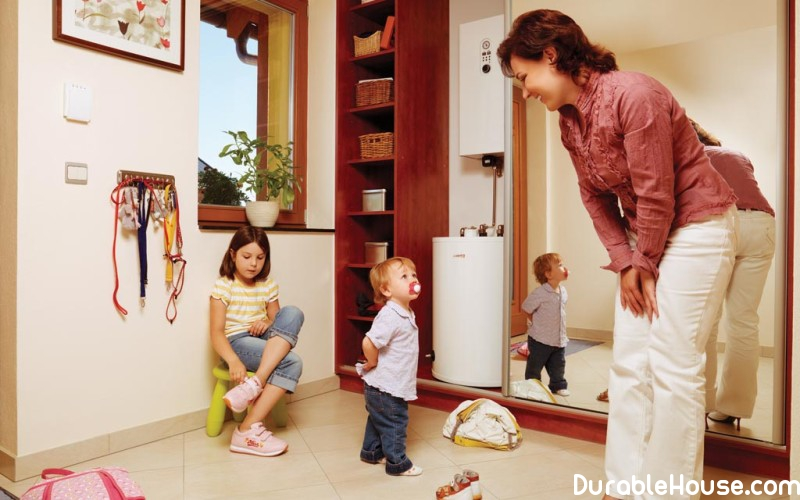
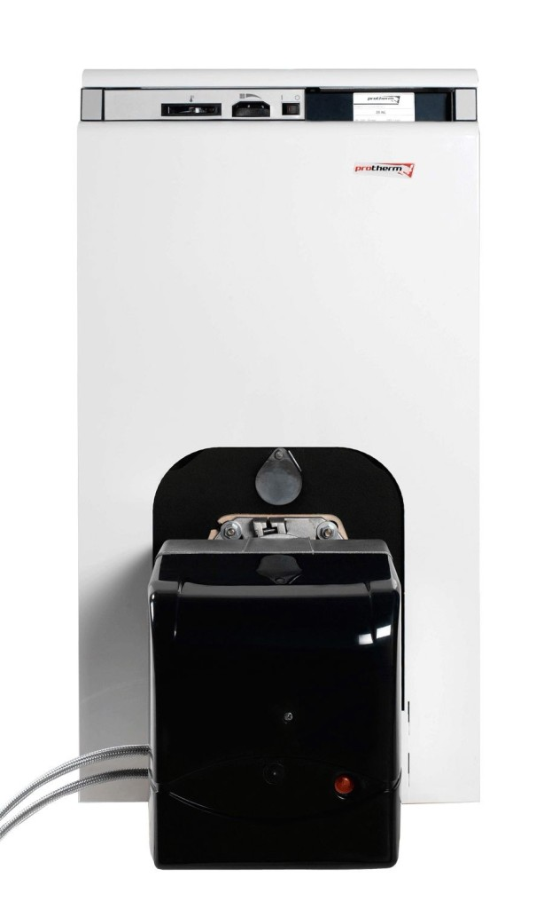

Reserve heating systems
Multi-fuel boilerWhat to do if the window is -15 ° C, and the boiler has failed Or has the gas / electricity supply stopped temporarily in the village? About how to insure against Unforeseen cold in the house, think at the moment of choosing the heating system in the house. For this In addition to the main heating system, a reserve (warm floor, Electric and infrared heaters, etc.), multi-fuel and / or UPS are installed. These devices are convenient to use in the case when the gas has not yet been supplied, but Planned.
Multi-fuel boilers allow the use of different types of fuels.
By changing the burner. In some models there is a built-in teng, which allows you to use Various types of fuel, electricity, gas, liquid and solid fuels.
The heat exchanger of the boiler can be cast iron or steel. The advantages of steel are low weight and higher efficiency. Boilers made of cast iron are safer and better Resist corrosion.
The latest models of universal boilers have a built-in Automatic, which independently switches to the second type of fuel, gas or diesel fuel. Such Boilers are called double-flow.
According to the principle of operation, multi-fuel heating boilers can be used Single-circuit and two-circuit (Table 1). A single-circuit boiler is only connected to the system Heating, it heats rooms up to 1000 m ?. To provide hot water Set the boiler.
The two-circuit boiler is connected to the water heating. is he Heats water for domestic needs. Universal two-circuit boilers are distinguished by the availability A special cast-iron plate that can be used for cooking.
The higher the power of a universal boiler, the fewer possibilities Combination of various types of fuel. Full range of functions and capabilities in fuel types Have boilers with a power of up to 50 kW. They work on all types of fuel, they can have a boiler For heating running water, and a stove for cooking.
Types of boilers for used fuel
Gas and diesel fuel
At first glance, this combination may seem strange: Manufacturers combined the cheapest fuel with the most expensive. However, this solution Technically literate. The fact is that the gas and diesel boilers differ only in type Burners, and then slightly. Therefore, the same combined boiler can work on Main or liquefied gas, as well as diesel fuel. And the transition from one to Another or third is carried out due to minimal reconfigurations and, possibly, replacement Burner parts. This task is quite simple for the customer service representative.
The choice of any of these types of fuel is practically unaffected On the boiler's thermal output. Such a boiler is a suitable solution for heating a large house Area.
Gas, diesel and solid fuel
Primarily such aggregates are solid-fueled, that Implies minimal automation of the work process and safety control. Gas and Diesel burners in them are attachments (in other words, the boiler can not Considered as a full-fledged gas or diesel water-heating device).
They lose in many respects: efficiency, power, Safety, convenience of use. This is a relatively inexpensive unit for non-selective Owners of small country houses.
Gas, diesel and electricity
The power of such a multi-fuel boiler is not enough for heating at home. The main task of this unit is to maintain the optimum temperature in the system Heating. It will not allow the water in the system to freeze even in severe frost, but for real Heat in the rooms will not be.
Gas, diesel, solid fuel and electricity
Multi-fuel boilers that can work on all types Fuel, are cumbersome and take up a lot of space. Available only in the floor Option. Among foreign manufacturers, such models are produced by the Swedish company CTC and the Finnish company Jama. Of the Russian boilers that can work on four types of fuel, we can note Model "ZIOSAB-45" and a series of boilers "Flame". Power of the boiler "ZIOSAB-45" when using gas Or liquid fuel is 45 kW (heated area up to 450 m? Well insulated Rooms with a ceiling height of up to 3 m), while working on solid fuels - 30 kW. In the cauldron "ZIOSAB-45" provides for the possibility of using electrical energy. Boilers at four Types of fuel firms Jama and "ZIOSAB" - two-circuit. Universal boilers "Flame" are produced As double-circuit (with the letter B in the title), and single-loop (without B in the title).Uninterruptible Power Supplies
To ensure boiler operation in case of shutdown You can use an uninterruptible power supply. When it comes to Occasional tripping and autonomous power supply of the boiler, the inverter wins "Traditional" solutions based on generators in many positions:
- instantly "picks up" the load when disconnected
- works without noise
- does not require discharge of exhaust and hot air
- is not afraid of the cold;
- Virtually no maintenance.
Which inverter is suitable for a boiler room?
Not every UPS is suitable for the boiler. First, it must give A smooth sinusoidal current shape identical to the alternating current of the urban network. Distorted The shape of the current leads to a rapid wear of the pumps, and may also "not like" the system Ignition of boiler burners. Therefore, as inverters of the boiler only inverters of category "Pure sine."
Please note that all UPSs with "Pseudo-sinus" - "approximated sine", as well as "budget" generators and even a part Brand generators of the younger rulers are distorted by the shape of the current.
Secondly, uninterrupted power supply of the boiler implies working with Large starting capacities. This is the power that will be required to start the device. She is Can exceed the nominal, because the pump needs to overcome the resistance Fixed liquid.
Of course, you can use generators or office UPS with "Pure sine" and power equal to the magnitude of the starting power of the instruments. But increased Power is required only for a short time - up to several seconds. And more powerful than You need a high-end UPS - it's useless spending. And more powerful than necessary, the generator - It is also an increased wear of its engine due to constant operation in the mode Underload.
Inverters, as specialized UPS for loads with launchers Currents, are able to "digest" the peak starting load almost 2 times its Of the nominal. Therefore, inverters are also the most profitable solution when emergency Power supply of the whole house, but only the uninterrupted power supply of the boiler house is needed.
Uninterrupted boiler power supply duration
To estimate battery life, you need to know two Parameter:
- approximate hourly average load power
- Battery capacity
The power constantly consumed by the boiler house (boiler automation, Ignition and pressurization of the burner, forced circulation pumps), rarely exceeds 400-500 watts. The power of the submersible pump of the well varies from 1000 to 3000 W. But Modern water supply systems have a hydraulic accumulator, thanks to which the well pump Works usually no more than 5-6 minutes per hour. Therefore, for example, a 2 kW pump will consume in Hour is only 200 watts.
Thus, the typical average hourly capacity of the boiler house - About 600 W / h.
How much power will it need?
In addition to the average hourly load power that determines Duration of boiler backup, to select the inverter, you need to know which Power may be required at a time. It will determine the required power rating Inverter. In this case it is desirable to put a 20% margin above the load capacity.
In most cases, for uninterrupted power supply to the boiler and pump One 3 kW of the inverter unit will suffice. But if for water supply at home A submersible pump with a capacity of more than 2-2.5 kW (which may require a starting Power more than 6 kW), a more thorough calculation of the total power Electrical appliances of the boiler room (Table 2).
How much does the inverter cost?
The cost of the equipment depends on the manufacturer and the functional Capabilities, in particular battery capacity.
Standby heating by electric convectors
The backup heating source is also used Electric convectors. They occupy a minimum of space, because Have a smooth flat Body. There are floor and wall models. Convector is simple in design, fast and noiseless Heats the room. The device does not "burn" oxygen, so it can be mounted even in Child.
Convectors are equipped with a mechanical or electronic thermostat. In the latter case, the device regulates the temperature of the outgoing air. Thanks to sensors that indicate an excess of air temperature, the convector Automatically lowers the heating temperature and goes into economy mode. Power consumption.
Most models are also equipped with an anti-freeze system, those. Able to maintain room temperature + 5 ° C with minimum flow Electricity. Also, most convectors are equipped with built-in overheating protection with Automatic restart.
Infrared heaters create a comfortable heat that Is considered the most environmentally friendly. They do not dry the air, they quickly warm up the room and can To be used as the basic system of house heating, incl. Thanks to its economy. These heaters are available in different designs: wall, ceiling and floor. And all They are directional devices. That is, more than 90% of the energy is transmitted The objects located in the range of the infrared emitter, and only a small part of the heat Is given to the air.
Features of pressurized boilers
The peculiar trump of the pressurized boilers is a removable fan burner. It is not cheap and is sold separately. At the same time you can buy as a "native" Burner, and an analogue of a third-party manufacturer (Baltur, Ecoflam, Weishaupigiersh, Riello, Lamborgiani, Bentone).
The fan burner allows the boiler to function with a high Efficiency at reduced gas pressure and regulate its power. Set of replaceable burners Provides flexibility in the choice of fuel.
One and the same supercharging boiler will run on gas or Diesel fuel by replacing a single unit - the burner. This is practical if the main gas Only appears in the plans for the development of the settlement. At first they acquire a supercharged Aggregate, diesel burner and heat the house with liquid fuel (as an alternative, you can Use and electric boiler). After carrying out the gas, it will only be necessary to change Burner.

{kind=link}
{kind=link}
{kind=link}